AMS_Original 安裝包下載：點我下載
將安裝包放入後按照下方指令開始安裝
1 | tar -xvf ams-edge.tar.gz |
下完指令安裝畫面，按下 Enter 確認安裝 AMS，再按 Enter or Space 鍵直到閱讀完 License
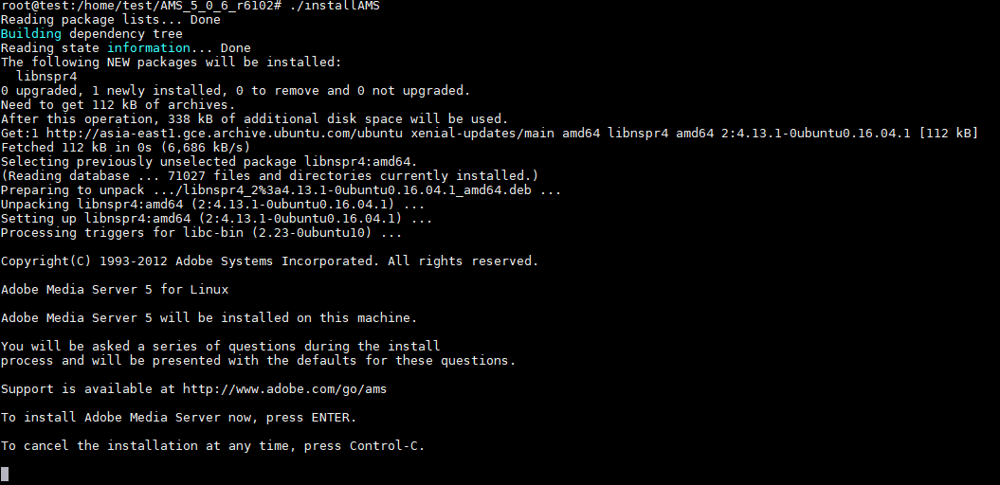
是否同意，輸入 y
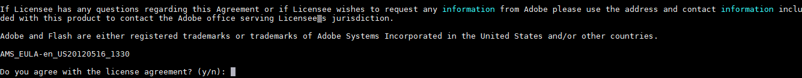
輸入序號
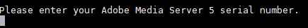
安裝目錄 ( /opt/adobe/ams )，直接按 Enter
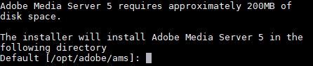
輸入管理員名稱：administrator
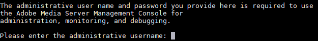
輸入管理員密碼：xxxxxxxx
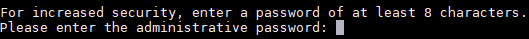
密碼二次輸入
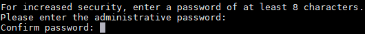
接下來都用預設，Enter
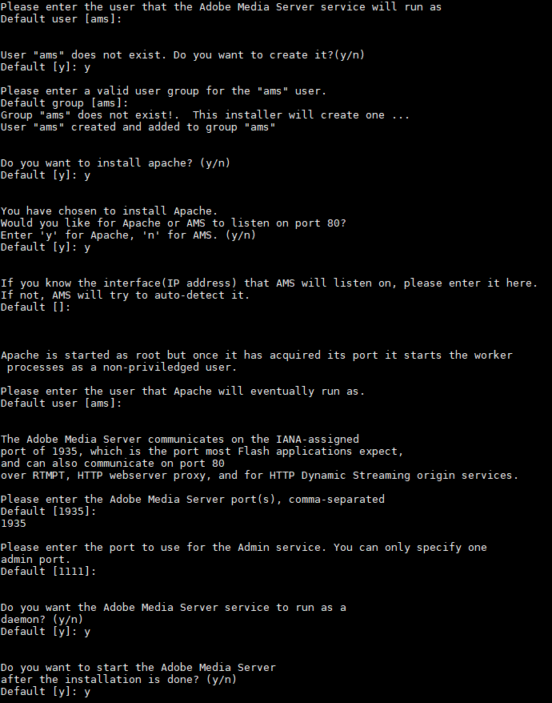
完成後總結圖如下，再輸入 y 確認安裝
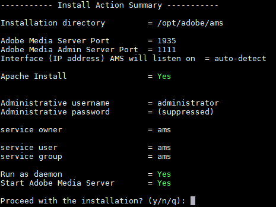
輸入 AMS-original Lan IP
1 | sed -i '208c<RouteEntry>*:*;10.140.0.3:1935</RouteEntry>' /opt/adobe/ams/conf/_defaultRoot_/_defaultVHost_/Vhost.xml |
重啟 AMS 服務
1 | service ams restart |
確認 AMS 啟動狀態 ( 有時候會不成功服務需多重起幾次 )
1 | service ams status |
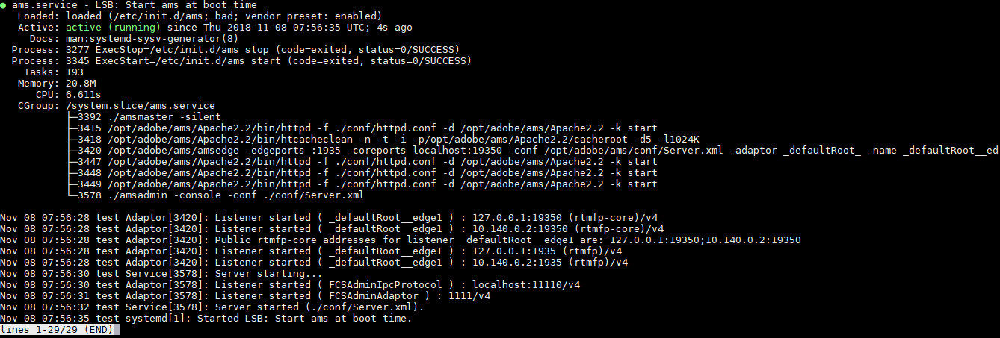
wowza 是使用 1935 port 記得打開 1935 port
1 | sudo ufw allow 22 ( 記得要先開啟 22 再開其他 port ) |
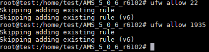